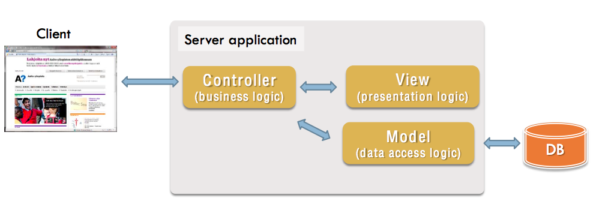

MVC and Django
Lassi Haaranen
CGI Example
#!/usr/bin/env python
import MySQLdb
print("Content-Type: text/html\n")
print("<html><head><title>Books</title></head>")
print("<body>")
print("<h1>Books</h1>")
print("<ul>")
connection = MySQLdb.connect(user='me', passwd='letmein', db='my_db')
cursor = connection.cursor()
cursor.execute("SELECT name FROM books ORDER BY pub_date DESC LIMIT 10")
for row in cursor.fetchall():
print("<li>{}</li>".format(row[0]))
print("</ul>")
print("</body></html>")
connection.close()Example (slightly modified) from Django Book which is outdated at the moment.
What are Web Application Frameworks?
"In computer programming, a software framework is an abstraction in which software providing generic functionality can be selectively changed by additional user-written code, thus providing application-specific software." Wikipedia
"A web application framework (WAF) is a software framework that is designed to support the development of dynamic websites, web applications, web services and web resources. The framework aims to alleviate the overhead associated with common activities performed in web development." Wikipedia
Library vs. Framework
What's the difference between frameworks and libraries?
My view: frameworks provide/force structrure for the whole application and in return provide functionality and ease of use of some 'mundane' tasks.
Frameworks' design philosophy impacts more. Design of libraries will only affect how you call out the functionality.
Good discussion on the topic from Stack Overflow
Separation of Concerns
"... 'the separation of concerns', which, even if not perfectly possible, is yet the only available technique for effective ordering of one's thoughts, that I know of. This is what I mean by 'focussing one's attention upon some aspect': it does not mean ignoring the other aspects," E.W. Djikstra
Wikipedia has a worthwhile article about it as well.
Model-View-Controller
Model-View-Controller (or MVC) is a pattern used in software architecture used for interactive software/application.
The application is created from three components which have different responsibilities.

Model (MVC)
Model maintains the state of the application, it holds the data. In the web application context typically the data is stored in a database(s).
Model is used to abstract away the database-centric stuff. This is typically done using Object-Relational-Mapper (ORM). It maps the data in the database to objects and conversely maps objects to database entries.
Any restrictions to the data are defined in the model... and it takes care of validating, so that incorrect data does not end up in the database.
View (MVC)
The concern of the view is to generate the user interface. In web applications this means producing HTML usually by using a templating language.
Data is acquired from the Model (typically via Controller) and mixed with HTML using templating language.
View can (and often does) format the data to suit the requirements of that particular view. It answers questions like: what is to be displayed? how should it be displayed? etc.
Controller (MVC)
Controller decides which views to use based on user input and data from the models.
Controller can be interpreted in many ways and in the simplest case it only selects the views.
In a broader interpretation it handles more of the business logic (utilizing models and what rules they enforce).
Django Framework
"The Web framework for perfectionists with deadlines" Django

Django on The Course
We will use version 1.7 with Python 3
Why Django? It offers nice amount of functionality and "forces" writing applications in a particular way. It is powerful and flexible and it is quite a "traditional" web framework as well.
The world is full of frameworks. Wikipedia has listed some for many languages.
Model-Template-View
Model-Template-View (MTV) is a variation of the MVC pattern.
Django uses this:
'In our interpretation of MVC, the “view” describes the data that gets presented to the user. It’s not necessarily how the data looks, but which data is presented. The view describes which data you see, not how you see it. It’s a subtle distinction.' Django FAQ about MVC
MTV and Django
In Django's MTV, the role of the model is the same as in the typical MVC.
Templates are just called that in Django, they produce the final HTML presented to the user by combining given HTML elements and data.
Views get the user input (HTTP request), they access the necessary models (and perhaps include some additional logic), and then pass the data to the template.
The template is rendered and returned to the user.
The role of the 'traditional' controller can be viewed in django as the whole framework + URL-routing (urls.py)
MTV and Django

django-admin.py
django-admin.py startproject my_first_project this will create a new folder with specific filestructure called my_first_project and importantly creates a manage.py script, which is used to do various tasks related to the project:
python manage.py syncdbcreates the database schemapython manage.py runserver [port]starts a development serverpython manage.py startapp appnamecreates an app for the projectpython manage.py helplists out all the nice things manage.py can do for you
Structure of a Django Project

The project 'myblog' contains an app called 'blogpost' which has various Python files which we'll look at next. There is also a nested 'myblog' directory that contains some important files.
urls.py
This routes URLs to Django functions (typically defined in views.py).
from django.conf.urls import patterns, include, url
from my_app.views import welcome_page
from django.contrib import admin
urlpatterns = patterns('',
url(r'^$', welcome_page), # ^$ matches empty path
url(r'^admin/', include(admin.site.urls)),
)
'Some people, when confronted with a problem, think, "I know, I'll use regular expressions." Now they have two problems.' More humor
views.py
views.py (naming convention) files contain views that get requested through the urls.py. For example:
from django.http import HttpResponse
def welcome_page(request):
return HttpResponse("Hello, world. Welcome to this page")Using a template and render shortcut:
from django.shortcuts import render
def latest_posts(request, amount):
posts = BlogPost.objects.all().order_by('-pub_date')[:amount]
context = {'blog_posts': posts}
return render(request, 'blog/index.html', context)Templates
Templates have some predefined HTML and they get some data from the view (which gets it from the model).
<!DOCTYPE html>
<html>
<head>
<title>Welcome</title>
</head>
<body>
<h1>Welcome to {{ system_name }}!</h1>
</body>
</html>
settings.py
This is the main configuration file for the project which can be extended by local settings files.
Some of the important settings contained in it: installed apps, database settings, where templates are loaded, and much more.
Generating HTML without Templates
It is possible but highly unadvisable!
Think about the following code:
def current_datetime(request):
now = datetime.datetime.now()
html = "<html><body>It is now {}.</body></html>".format(now)
return HttpResponse(html)
How does that relate to separation of concerns and maintainability?
Templating Languages
The main idea is to separate the presentation from the data.
They offer many benefits, such as:
- Flexibility - designers can work on templates while coders work on code
- Maintainability - loose coupling. Presentation can be reworked completely without touching the underlying logic
- Typically easier than coding - non-coders (think designers, ux specialists) can work on them as well
Django Templates
Templates in Django can generate HTML/XML/JSON and other formats.
They use a templating language that mixes its own tags with the parent languages (e.g. HTML) tags.
They have a minimal set of control constructs (looping, branching) and any actual logic should be coded in views.
They have template inheritance to keep up with the DRY-principle.
{{ variable }}
{# comment #}
{% programming logic %}Templates - Variables
Double curly brackets denote a variable in templates. The values are filled in the view. If the variable is a dict/list/object etc., dot notation can be used to access its members.
Variables can also be preprocessed before they are included in the document. Filters are marked with: | filter_name & params, e.g.:
{# escapes special characters in urls #}
{{ userprovided_url | urlencode }}
{# e.g. http://www.google.com -> http%3A//www.google.com #}Templates - Comments
Two ways:
{# self commenting #}
{% comment %}
This is commented out.
{% endcomment %}
Templates - if and for
Can be used to test presense of a variable with {% if variable %}.
{% if condition %}
If condition evaluates to true this will get rendered.
{% else %}
Otherwise this will get rendered.
{% endif %}
{% ifequal a b %}
{{a}} and {{b}} are equal
{% else %}
{{a}} and {{b}} are NOT equal
{% endif %}
{% for item in collection %}
Collecttion (e.g. list) contains {{item}}.
{% endfor %}
For a complete list of tags and filters refer to Django Documentation.
Templates - Workflow
Following steps describe how templates are rendered:
- Fetch a template
- Prepare data in Context object
- Render template with the data
- Return rendered template as an HttpResponse
def congratulate_page(request):
template = get_template("congratulations.html") # 1.
variables =
Context( { "name" : "Matti", "username" : "iceman" } ) # 2.
output = template.render(variables) # 3.
return HttpResponse(output) # 4.
There is a render shortcut for this.
Object-Relational-Mapper ORM
Most of the data in a Django application is in objects that have a number of instance variables (that can also reference other objects).
Data is stored in tables in relational databases that are not designed to contain objects.
Object-Relational-Mapper is designed to bridge this gap. It converts objects to a form that can be stored relational database. And similarly, fetches data from the database and transforms that data back into objects.
Models in Django
The first step is to describe models in Python code (typically in app/models.py). The following example defines two models:
from django.db import models
class Student(models.Model):
name = models.CharField(max_length=30)
student_number = models.CharField(max_length=6)
group = models.ForeignKey(ProjectGroup)
class ProjectGroup(models.Model):
name = models.CharField(max_length=30)
project_deadline = models.DateField()Django ORM
Once you've defined some models you can run python3 manage.py makemigrations appname and then python3 manage.py sqlmigrate which will give the corresponding SQL query to create the necessary tables.
BEGIN;
CREATE TABLE "student_projectgroup" ("id" integer
NOT NULL PRIMARY KEY AUTOINCREMENT, "name" varchar(30)
NOT NULL, "project_deadline" date NOT NULL);
CREATE TABLE "student_student" (
"id" integer NOT NULL PRIMARY KEY AUTOINCREMENT,
"name" varchar(30) NOT NULL, "student_number" varchar(6) NOT NULL,
"group_id" integer NOT NULL
REFERENCES "student_projectgroup" ("id")
);
CREATE INDEX
student_student_0e939a4f ON "student_student" ("group_id");
COMMIT;